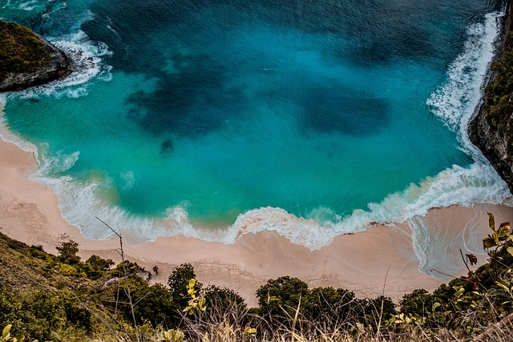

Explore the beaches!
Taniti is home to beautiful sandy beaches. They are perfect for anyone that wants to bask in the sun, or swim in the sea. Go to the sightseeing page for more information about the available places to enjoy your island adventure!
Experience local food!
Taniti food culture is rich with the fish that are locally sourced from the sea surrounding the island! The use of rice, fresh fruit, and many other tradtional foods can be found within our many Tanitian restaurants.Events!
Check out below for all the local events that happen all throughout the year!